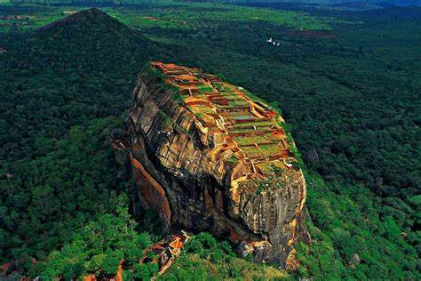
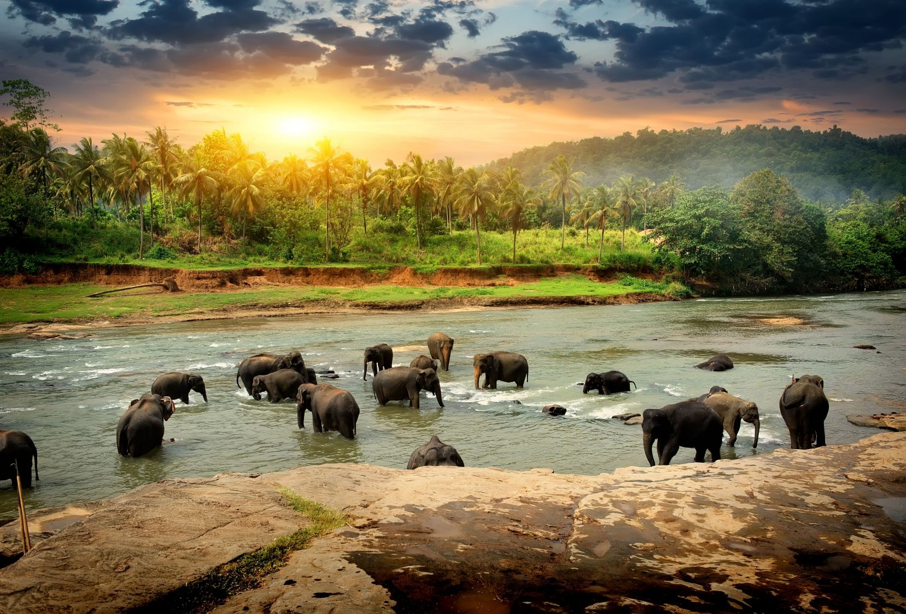
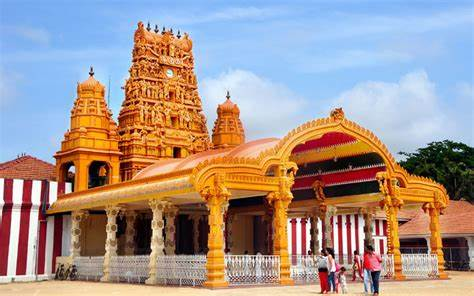
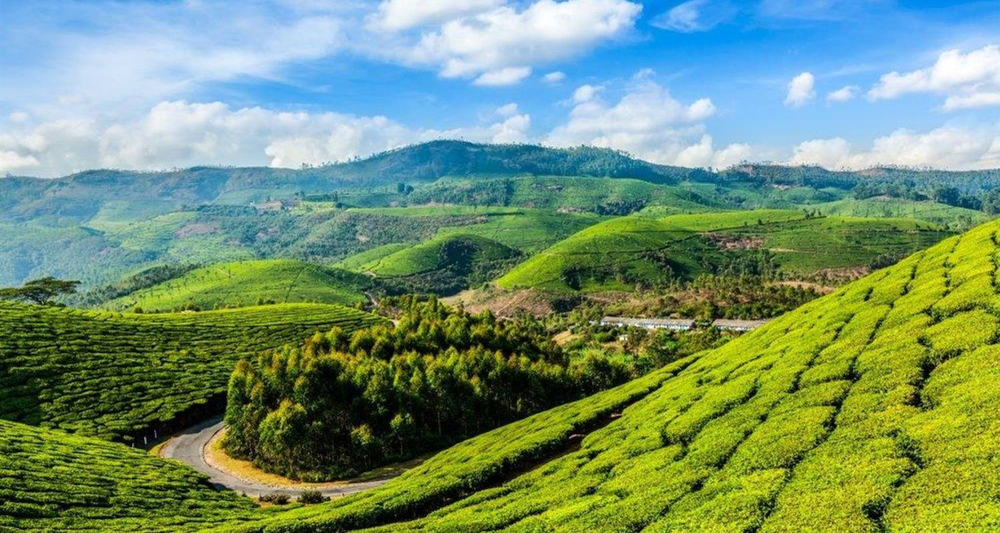

Sri lanka is een klein eilandje onder India.Het is een land in Oost-Azië.De hoofdstad is Sri Jayewardenapura Kotte, dat vlakbij de westkust ligt bij Colombo,
dat de grootste stad van het land is. De stad Kandy, in het bergachtige binnenland, wordt gezien als de culturele hoofdstad.
Daar staat de Dalada Maligawa (de Tempel van de Tand),een boeddhistische tempel waarvan mensen aannemen dat de tand die er wordt bewaard van de Boeddha is geweest.
Bevolking
Ongeveer driekwart van de inwoners van Sri Lanka zijn Singalezen. Het grootste deel van de Singalezen is boeddhist,
een klein deel is christen. Verder is ongeveer 1 op de 7 inwoners Tamil,
zij hebben als religie het hindoeïsme. Een deel van de Tamils komt oorspronkelijk uit India.
De derde grote bevolkingsgroep zijn de Moren, zij hebben als religie de islam.
Een kleine bevolkingsgroep zijn de Burghers,
zij stammen af van Portugese, Nederlandse of Engelse kolonisten en wonen vooral in de kustgebieden.

Bron:

Bron:

Bron:

Bron:
Religie
Volgens de overlevering zou Sri Lanka in de 3e eeuw v.Chr. bekeerd zijn tot het boeddhisme,
dat zich sedertdien tot de grootste godsdienst van het land heeft ontwikkeld en onder andere gekenmerkt wordt door een invloedrijk monnikendom.
Volgens de census van 2012 is 70,2% van de bevolking boeddhistisch (hoofdzakelijk theravada-boeddhisten, voornamelijk Singalezen),
12,6% hindoe (hoofdzakelijk Tamils), 9,7% is moslim (voornamelijk soennitisch) en 7,4% is christelijk (hoofdzakelijk behorend tot de katholieke Kerk,
die in Sri Lanka bestuurlijk georganiseerd is in één aartsbisdom met zes bisdommen).
De overige 0,1% is atheïst of hangt een andere religie aan.
Galle
Galle is de hoofdstad van de Zuidelijke Provincie op Sri Lanka en het gelijknamige district Galle. De havenstad heeft zo'n 94.000 inwoners.
In de stad valt nog veel te zien van de Nederlandse overheersing in de 17e en 18e eeuw. In deze tijd was Galle de belangrijkste havenstad van Sri Lanka.
Daarom werd in 1663 door de Nederlanders een 36 hectare groot fort gebouwd, dat tegenwoordig op de werelderfgoedlijst staat. Dit fort heeft tijdens de tsunami van 26 december 2004 zijn dienst bewezen;
het heeft een groot deel van de stad beschermd door de golf aanzienlijk af te remmen.
De Nederduits Gereformeerde "Groote Kerk", oorspronkelijk gebouwd in 1640 en herbouwd rond 1755, heeft een vloer met daarin diverse grafstenen van de oude Nederlandse begraafplaatsen.
In tegenstelling tot Anuradhapura en Polonnaruwa zijn de bezienswaardigheden hier onderdeel van het huidige leven.
{kind=link}
{kind=link}
{kind=link}
{kind=link}